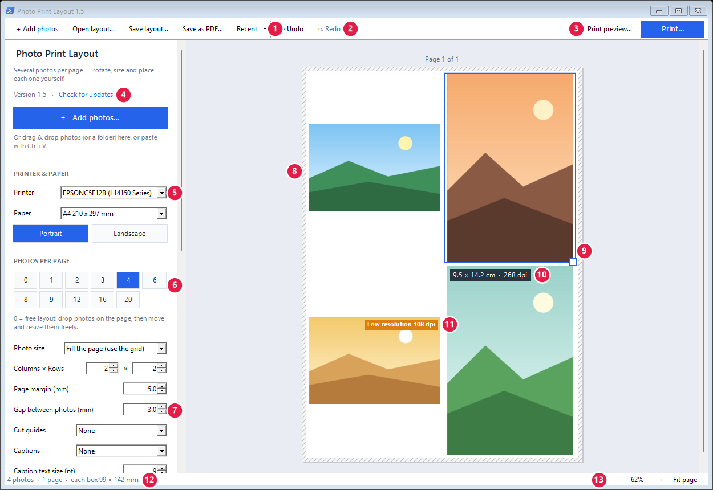
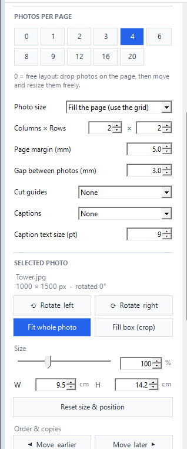
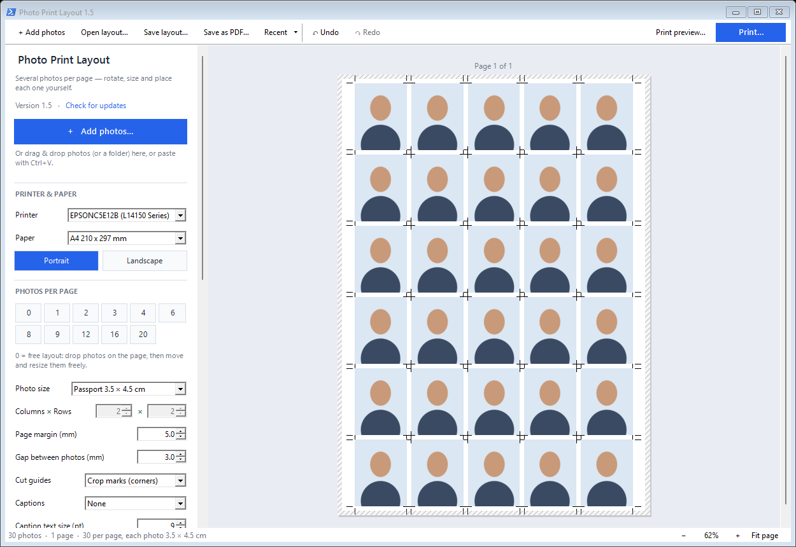
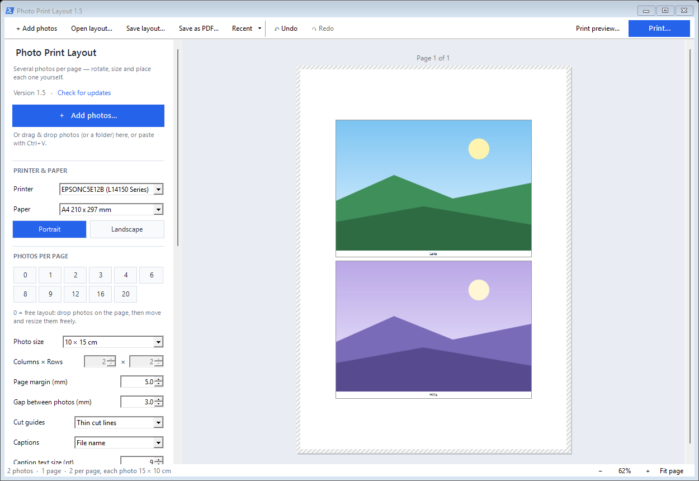
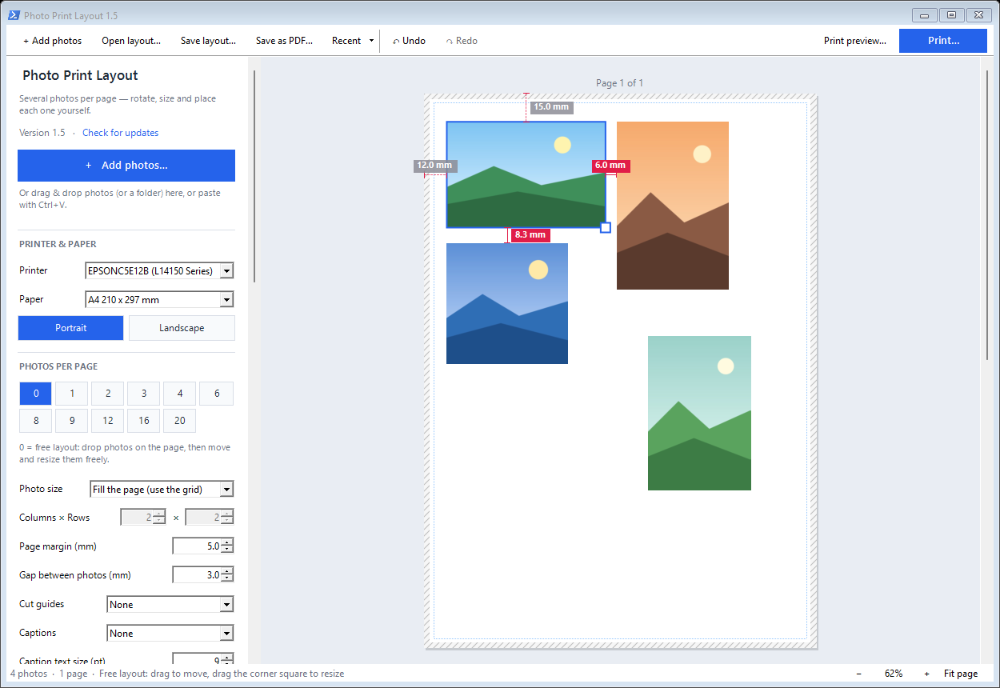
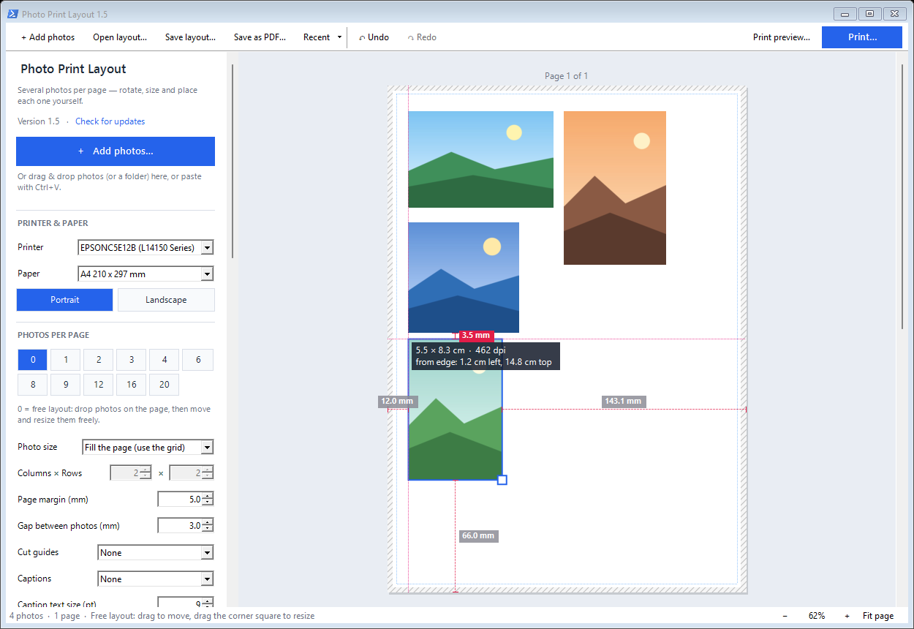
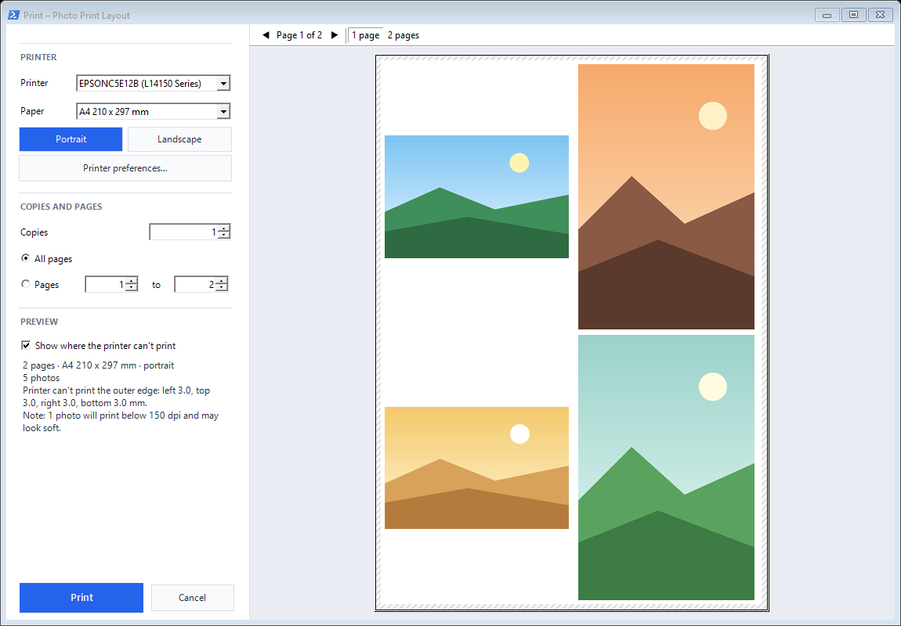

User guide — print several photos on one page, and rotate, size and place each one yourself.
Version 1.5 · Free and open source · Windows 10 / 11 · github.com/FaizR-Eng/photo-print-layout
1. Getting started
Download PhotoPrintLayout-1.5-installer.zip from the project's Releases page on GitHub, unzip it, and double-click Install.cmd. It installs for your user only, so no admin rights are needed. (Or download just PhotoPrintLayout.exe and run it without installing.)
Start it from the Start menu, or right-click photos in File Explorer → Show more options → Open in Photo Print Layout.
First start: Windows may show “Windows protected your PC”. Click More info → Run anyway. This happens with apps that are not commercially signed.
Quick start
Add photos with the toolbar or the blue button, or drag them onto the window.
Choose the printer, paper and portrait / landscape.
Pick photos per page (1–20), an exact photo size (10×15, passport…), or 0 for a free layout.
Adjust each photo: rotate, resize, move.
Click Print… at the top right. The Print window shows a live preview of every page.
2. The window

The main window in a 4-per-page layout. The numbers are explained below.
#
Area
What it does
1
Toolbar: files
Add photos, Open / Save layout, Save as PDF, and Recent layouts and photos.
2
Undo / Redo
Take back changes, or do them again.
3
Print preview / Print
Always visible. Both open the Print window with a live preview (Ctrl+P).
4
Version · Check for updates
Asks GitHub whether a newer version exists (only when you click).
5
Printer & paper
Printer, paper size, portrait / landscape. The layout uses exactly this paper.
6
Photos per page
Grid presets 1–20, 0 = free layout, and Photo size for exact print sizes.
7
Page settings
Margin, gap between photos, cut guides and captions.
8
Page preview
Pages as they will print. The hatched band is where your printer can't print.
9
Selected photo
Blue frame; drag the corner square to resize. More options in the left panel.
10
Size label
Hover over a photo to see its printed size in cm and its resolution (dpi).
11
Low-resolution warning
Orange below 150 dpi, red below 100 dpi: the photo may print soft.
12
Status line
Number of photos and pages, and the box or photo size.
13
Zoom
− / + and Fit page. Ctrl + mouse wheel over an empty area also zooms.
3. Adding photos
Toolbar + Add photos (Ctrl+O), or drag & drop photos or a whole folder onto the window, or paste with Ctrl+V.
From File Explorer: select one or many files → right-click → Show more options → Open in Photo Print Layout, or Send to → Photo Print Layout. Several files open together in one window, and if the app is already open they are added to it.
PDF filesNEW: each page becomes one photo (up to 50 pages). Password-protected PDFs can't be opened.
Supported: JPG, PNG, BMP, GIF, TIFF, WebP, PDF. HEIC and PSD work when Windows has an image codec for them (for HEIC: “HEIF Image Extensions” from the Microsoft Store).
4. Photos per page and photo sizes

Presets 1–20 divide the page into equal boxes; Columns × Rows allows any grid.
Photo size prints every photo at an exact size and fits as many as possible on each page: 9×13, 10×15, 13×18, 15×20, 20×25 cm, 4×6 / 5×7 / 8×10 in, passport 3.5×4.5 cm, 2×2 in, wallet, or Custom size. Photos are set to Fill so they come out exactly that size (switch a photo to Fit to see it whole).
Page margin: empty border. If it is smaller than your printer's unprintable edge, an orange note warns you.
Gap between photos: space between the boxes.
Cut guides: thin cut lines around each box, or crop marks at the corners.
Captions: the file name or your own text under each photo, with a text size in points.

Passport 3.5×4.5 cm: 30 per A4 page, with crop marks.

10×15 cm: 2 per A4 page, with cut lines and file-name captions.
5. Working with a photo
Click a photo to select it, then use the Selected photo panel, the page, or right-click.
Rotate left / right: 90° at a time. Nothing ever rotates by itself.
Fit whole photo shows the complete picture; Fill box (crop) fills the box and trims the edges.
Size: slider or %, exact W / H in cm, the corner square, or Ctrl + mouse wheel.
Move inside its box: drag the photo. Swap places: drag it onto another box.
Move earlier / later changes the order. Duplicate, Repeat to fill page (e.g. passport photos).
Caption: your own text (when Captions is set to “My own text”).
Reset size & position, and Remove (the file itself is not deleted).
6. Free layout (“0”)
Click 0 under Photos per page to place photos anywhere, at any size. Photos keep the place they had in the grid, so you can start from e.g. “4 per page” and fine-tune.

NEW Red labels: gap in mm to the nearest photos. Grey: distance to the paper edges.

While dragging: the photo snaps into line (dotted guides), the gaps update live, and the label shows size and position.
Move: drag a photo anywhere, even onto another page; drag it onto the extra page at the end to start a new page.
Resize: drag the corner square (proportions are kept), or type W / H in cm. Exact position: type X / Y in cm from the paper's left / top edge.
GapsNEW: select a photo to see the gap to its neighbours in mm (and to the paper edges when one photo is selected). Turn off with “Show gaps between photos (mm)”.
Nudge: arrow keys move 1 mm, Shift + arrow 1 cm. Hold Alt while dragging to place freely without snapping.
The dotted blue rectangle shows the page margin (not printed). Overlapping photos: right-click → Bring to front / Send to back.
7. Selecting several photos and arranging them
How to select
Result
Ctrl + click / Shift + click
Add or remove photos.
Drag a box from an empty spot
Selects every photo it touches.
Ctrl+A · right-click → Select all on this page
Everything, or one page.
Rotate, size, Fit/Fill, duplicate and remove then apply to all selected photos; in free layout they move together.
Arrange (free layout)
What it does
Left · Center · Right · Top · Middle · Bottom
Line up edges or centres.
Space evenly ↔ / ↕
Equal gaps. With an Exact gap in mm NEW, the photos are placed exactly that far apart.
Same width / height · Center on page
Match the last photo clicked; centre the selection.
Tick Align to page margins to align to the page instead of to each other. Show 1 cm grid adds a measuring grid on screen.
Dragging a box from an empty spot selects every photo it touches.
8. Printing

The Print window: settings on the left, the real pages on the right.
Print… (or Ctrl+P) opens the Print window. Change printer, paper or portrait / landscape and the preview updates at once.
Printer preferences… opens your printer's own settings: print quality, paper type (e.g. photo paper), colour.
Copies and a page range. The info text shows the number of pages, the printer's unprintable edge and any low-resolution photos.
Save as PDF… in the toolbar saves the pages as a PDF file (300 dpi), without needing a PDF printer.
Tip: do one test print on plain paper and measure a photo with a ruler: a 10×15 cm photo should measure 10×15 cm. If it doesn't, open Printer preferences… and turn off options like “Fit to page”, “Reduce/Enlarge” or borderless “Expansion”.
9. Undo, save, open and recent
Undo / Redo (Ctrl+Z / Ctrl+Y) for almost every change.
Save layout… (Ctrl+S) stores paper, layout, sizes, captions and every photo's position in a small .photolayout file. Open layout… brings it back exactly. The file remembers where your photos are; if you move or rename them, the app tells you which are missing.
Recent lists your last 10 layouts and photos. The app also remembers your printer, paper, margin and window size.
10. Install, update and uninstall
Install.cmd
Installs for your user (no admin) into %LOCALAPPDATA%\Programs\PhotoPrintLayout, adds the Start menu entry, right-click menu (photos, PDF, PSD), Send to, and an entry in Settings › Apps.
Update
Run a newer Install.cmd. It updates in place, moves the old files into a previous folder and keeps your settings. Click Check for updates in the app to see if there is a new version.
Uninstall.cmd
Removes the app, shortcuts, right-click entry and Send to. Your settings and saved layouts stay.
RightClick-Add / Remove
Add or remove only the right-click and Send to entries.
11. Keyboard shortcuts
Keys
Action
Keys
Action
Ctrl+O
Add photos
R / Shift+R
Rotate right / left
Ctrl+V
Paste photos
F
Switch Fit / Fill
Ctrl+A
Select all
+ / −
Bigger / smaller
Ctrl+Z / Ctrl+Y
Undo / Redo
Del
Remove selected
Ctrl+D
Duplicate
←→ (grid)
Move earlier / later
Ctrl+S
Save layout
Arrows (free)
Nudge 1 mm (Shift: 1 cm)
Ctrl+P
Print window
Esc
Clear selection
Ctrl + wheel
Resize photo / zoom
Alt while dragging
No snapping
12. Questions and problems
“Windows protected your PC”
Click More info → Run anyway. Only the first time.
No right-click entry
On Windows 11 it is under Show more options (or Shift+right-click). Run Install.cmd or RightClick-Add.cmd if it is missing.
A file won't open
HEIC/PSD need a Windows codec; password-protected PDFs are not supported. Save the picture as JPG.
Printed size is slightly different
Check Printer preferences for scaling or borderless expansion (see the tip in section 8).
Edges are cut off
Make the page margin at least as wide as the hatched band.
Photo looks blurry
It has a low-resolution badge: print it smaller, or use a bigger original.
Which version do I have?
It is in the title bar. Click Check for updates to compare with the newest.
Questions or ideas? Open an issue on the project page: github.com/FaizR-Eng/photo-print-layout